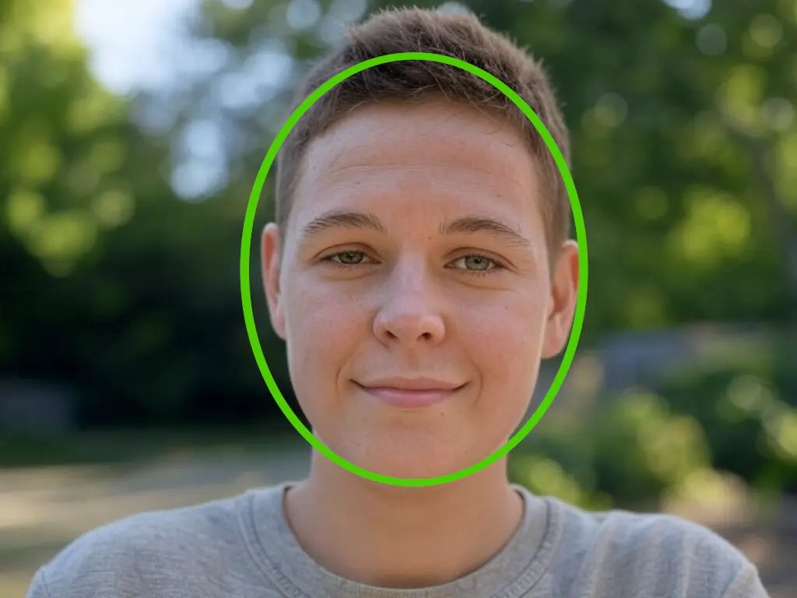
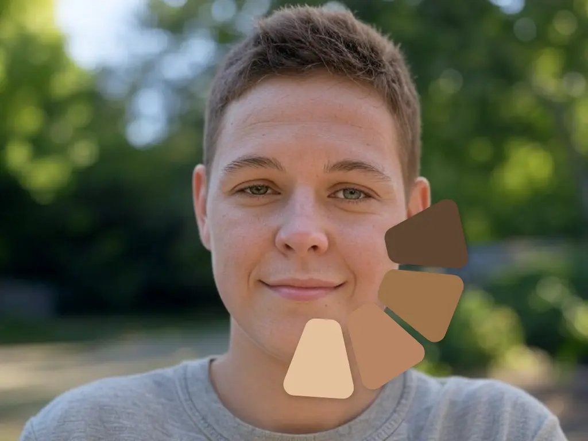

Shadify is a revolutionary app that helps you find the perfect shade of dancewear for your skin tone. Using AI technology, we analyse your skin tone and suggest the perfect shade of dancewear for you.
We offer four shades of dancewear to ensure that everyone can find a perfect match. Let's see how it works!
For more information, please read our Terms and Conditions.
Find a spot with good natural lighting and hold your camera steady. Keep your head centered in the frame and make sure your face is clearly visible.

Keep your face inside the circle until it turns green, then hold still while the system analyses your skin tone.

Shadify will analyse your skin tone and suggest a shade match, but you'll have the freedom to select whichever tone feels most authentic to you.